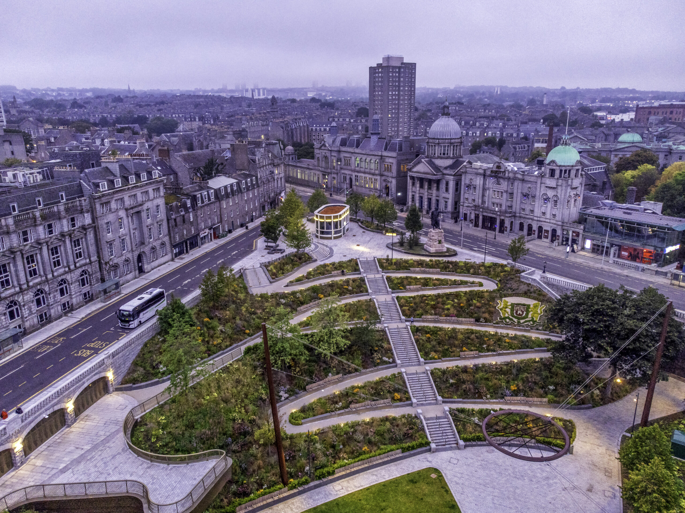

Activities in Aberdeen
Discover some of the best things to do in Aberdeen!

Aberdeen Beach
Enjoy the scenic views of the North Sea at Aberdeen Beach. Perfect for a family day out, it offers a leisurely promenade, a sandy beach, and numerous cafes.
Learn More
Marischal College
Visit Marischal College, the second largest granite building in the world and a part of the University of Aberdeen. Explore its Gothic architecture and significant history.
Learn More

Union Terrace Gardens
Union Terrace Gardens offer a serene green space in the heart of Aberdeen. This historic park is surrounded by iconic buildings and is a popular spot for relaxation and events.
Learn More
St Machar's Cathedral
St Machar's Cathedral is a historic church located in Old Aberdeen. It's renowned for its stunning architecture and its unique heraldic ceiling, dating back to the 16th century.
Learn More